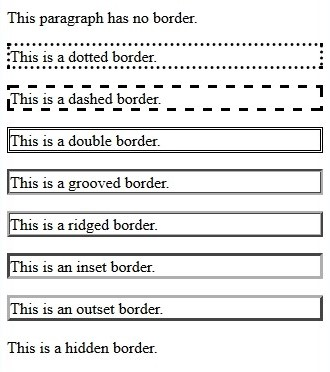

CSS Cheatsheet¶
CSS stands for Cascading Style Sheet
Function: separate style from content in HTML
CSS Types¶
Inline CSS
CSS applied to a single element
<p style="color:white; background-color:gray;">
</p>
Embedded CSS
CSS defined in a <style> tag
<html>
<head>
<style>
p {
color:white;
background-color:gray;
}
</style>
</head>
<body>
<p>This is my first paragraph. </p>
<p>This is my second paragraph. </p>
</body>
</html>
External CSS
CSS saved in .css files
The HTML
<head>
<link rel="stylesheet" href="example.css">
</head>
<body>
<p>This is my first paragraph.</p>
<p>This is my second paragraph. </p>
<p>This is my third paragraph. </p>
</body>
p {
color:white;
background-color:gray;
}
CSS Selectors¶
h1 { color: orange; }
Selector Property Value
Type selectors
Style targeting all the items of one kind of element
p {
color: red;
font-size:130%;
}
ID selectors
The HTML
<div id="intro">
<p> This paragraph is in the intro section.</p>
</div>
The CSS
#intro {
color: white;
background-color: gray;
}
Class selectors
The HTML
<div>
<p class="first">This is a paragraph</p>
</div>
The CSS
.first {font-size: 200%;}
Descendant Selectors
CSS targeting contents in <em> tags
The HTML
<div id="intro">
<p class="first">This is a <em> paragraph.</em></p>
</div>
The CSS
#intro .first em {
color: pink;
background-color:gray;
}
Comments
/* Comment goes here */
Inheritance
A child element will usually take on the characteristics of the parent element unless otherwise defined.
Text Styles¶
Font family
The HTML
<p class="sansserif">
This is a paragraph shown in sans-serif font.
</p>
<p class="monospace">
This is a paragraph shown in monospace font.
</p>
The CSS
p.sansserif {
font-family: Helvetica, Arial, sans-serif;
}
p.monospace {
font-family: "Courier New", Courier, monospace;
}
Font size
The CSS
p.medium {
font-size: medium;
}
h1 {
font-size: 20px;
}
xx-small, small, medium, large, larger, x-largeem = pixels / 16
Font style
font-style: italic;
normal, italic, oblique
Font weight
font-weight: bold;
lighter, bold, bolderValues:
100 (thin) - 900 (thick)
Font variant
font-variant: normal;
normal, small-caps, inherit
Color
color: red;
Values:
- hexadecimal values
#FFFFFF - keywords
red - RGB
rgb(255,0,0)
Text align
text-align: left;
left, center, right
Vertical align
vertical-align: top;
top, middle, bottom, baseline, sub, super, px(positive and negative)
Text decoration
text-decoration: inherit;
none, inherit, overline, underline, line-through, blink
Text indent
text-indent: 60px;
Text shadow
text-shadow: 5px 2px 4px grey;
parameters: X coord., Y coord., blur radius, color
Text transform
transform: capitalize;
<!-- Transforms the first character in each word to uppercase -->
capitalize, uppercase, lowercase
Letter and word spacing
letter-spacing: 4px;
word-spacing: 4px;
normal, px(positive and negative)
White space
white-space: nowrap;
normalinheritnowrapmakes the text continue on the same line until a
tag is encountered, and also collapses all sequences of whitespace into a single whitespace.pretext will only wrap on line breaks and white spacepre-linetext will wrap where there is a break in code, but extra white space is still ignoredpre-wraptext will wrap when necessary, and on line breaks
Block Styles¶
Box structure

backgound color covers content and padding
Border
border-style: solid;
border-width: 2px;
border-color: blue;
border: 5px solid green;
none, dotted, dashed, double, groove, ridge, inset, outset, hidden

Width and height
Parameters: width, height, min-width, max-width, min-height, max-height
Background color
background-color: rgb(135,206,235);
Background image repeat and attachment
background-image: url("logo.png");
background-repeat: repeat-x;
background-attachment: fixed;
repeat, no-repeat, repeat-x, repeat-y, inheritBackground-attachment keywords:
fixed, scroll, inheritcan be set for the whole page too.
List item marker
list-style-type: lower-alpha;
list-style-image: url("logo.jpg");
list-style-position: inside;
<ul> keywords: circle, square<ol> keywords: lower-alpha, decimal, disc
or
list-style: square outside none;
Table style
border-collapse: separate;
border-spacing: 20px 40px;
caption-side: top;
empty-cells: hide;
table-layout: auto;
width="10%"
empty-cells keywords: hide, show
caption-side keywords: top, bottom
table-layout keywords: auto, fixed
Link style
a:hover {
color: red;
}
a:link defines the style for normal unvisited linksa:visited defines the style for visited linksa:active a link becomes active once you click on ita:hover a link is hovered when the mouse is over it
text-decoration: none;
Cursor
cursor:help;
auto, default, crosshair, move, help, text, wait, n-resize, ..., w-resize, ne-resize, ..., sw-resize, pointer, progress, not-allowed, no-drop, vertical-text, all-scroll, col-resize, row-resize
Layout¶
display
display:block;
block, inline, none, list-item, table, table-cell, table-column, grid
visibility
visibility: hidden;
hidden, visibleNotes:
display:none hides the entire place, while visibility: hidden leaves a blank.
position
position:static;
staticnot affected bytop,bottom,left,rightfixedspecified bytop,bottom,left,rightrelativeabsolute
Floating
Elements that come after the floating element will flow around it.
img {
float: right;
}
none, left, right
Clear
The clear property specifies the sides of an element where other floating elements are not allowed to be.
clear: both;
none, both, left, right
Overflow
The overflow property specifies the behavior that occurs when an element's content overflows the element's box.
overflow: scroll;
visible(default), scroll, hidden, auto
Z-index The z-index property specifies the stack order of an element.
z-index: 3;
CSS3 Features¶
Vendor prefix / browser prefix
-webkit-border-radius: 24px;
- Chrome
-webkit- - Safari
-webkit- - Firefox
-moz- - IE and Edge
-ms- - Opera
-o-
Border radius
rounded corners
border-radius: 20px;
border-radius: 0 0 20px 20px;
Box shadow
box-shadow: 10px 10px 5px 5px #888888
inset 10px 10px 5px #888888;
inset: inner shadow
separate different shadows by comma
Color systems
- RGB
- RGBA
TheAlphaparameter indicates transparency (0 for transparent and 1 for opaque) - HSL (Hue, Saturation, Lightness)
Hue is a degree on the color wheel, 0 (or 360) is red, 120 is green, 240 is blue - HSLA
Text shadow
text-shadow: 5px 10px 2px #93968f;
text-shadow: none;
Pseudo-classes
The HTML
<div id="parent">
<p>First paragraph</p>
<p>Second paragraph</p>
<p>Third paragraph</p>
</div>
The CSS
#parent p:first-child {
color: green;
text-decoration: underline;
}
Commonly used pseudo-classes: first-child, last-child
Pseudo-elements
::first-line- the first line of the text in a selector::first-letter- the first letter of the text in a selector::selection- selects the portion of an element that is selected by a user::before- inserts some content before an element::after- inserts some content after an element
Word wrap
word-wrap: normal;
normal, break-word
Linear gradient
background:linear-gradient(DeepSkyBlue, Black);
linear-gradient(blue 20%, yellow 30%, green 85%);
linear-gradient(bottom left, blue, green, white);
linear-gradient(100deg, blue, green, white);
repeating-linear-gradient(blue, green 20px);
0deg = left
Radial gradient
radial-gradient(green, yellow, blue);
radial-gradient(circle, green, yellow, blue);
radial-gradient(top left, green, yellow, blue);
radial-gradient(green 5%, yellow 15%, blue 60%);
Background size
background-size: 100px 100px;
width and height, contain, cover
Background clip
background-clip: border-box;
border-box- (default) the background is painted to the outside edge of the borderpadding-box- the background is painted to the outside edge of the paddingcontent-box- the background is painted within the content box
Multiple backgrounds
background-image: url(csslogo.png), url(csscode.jpg);
background-position: right bottom, left top;
Opacity
opacity: 1;
Transitions
allow one property value change to another value over time
transition: background-color 5s ease-in;
transition-property, transition-duration, transition-timing-function, transition-delay
Timing-function keywords: ease, ease-in, ease-out, ease-in-out, linear, cubic-bezier(n,n,n,n);
Transforms
transform: rotate(10deg);
transform-origin: 25% 75%;
transform: translate(100px, 50px);.
transform: skew(30deg);
transform: scale(0.7, 0.7);
Keyframes
div {
width: 100px;
height: 100px;
background-color: red;
animation-name: colorchange;
animation-duration: 1s;
animation-timing-function: linear;
animation-delay: 2s;
animation-iteration-count: 5;
}
@keyframes colorchange {
0% {background-color: red;}
50% {background-color: green;}
100% {background-color: blue;}
}
@keyframes colorchange {
from {background-color: red;}
to {background-color: green;}
}
animation-iteration-count: repeats the animation. The keyword can be infinite
animation-direction keywords: normal, reverse, alternate, alternate reverse
or
animation: colorchange 3s ease-in 1s infinite reverse;
order: name duration time-function delay iteration-count direction
3D transforms
transform: rotateX(150deg);
transform: rotateY(150deg);
transform: rotateZ(150deg);
transform: translateX(29px)
scaleX(0.5)
perspective: 100px;
perspective indicates the distance from the object